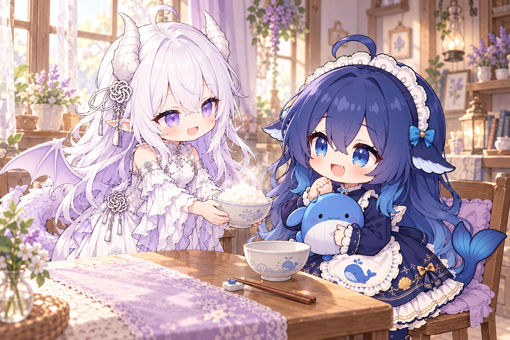

01 — QQSnowLuma · OneBot v11
群聊里，接得上话。
把 QQ 消息交给 DSH，角色、上下文和回复方式由自己的配置决定。
- 群聊与私聊会话、角色与模式
- 图片、表情与可选语音接口
- 白名单、限流、本地控制台
有自己的语气，记得正在聊的话题。
把大肥鱼接到 QQ 和微信，让熟悉的聊天窗口里，多一个愿意认真回应的伙伴。

QQ 和微信各有自己的桥接、配置与会话。可以只装其中一个，也可以同时使用。
把 QQ 消息交给 DSH，角色、上下文和回复方式由自己的配置决定。
后台接收消息，解码图片与陌生表情，给支持视觉的模型一张真正能看的图。
模型负责理解和表达；桥接负责范围、会话和发送。安全边界由代码执行，不只写在提示词里。
来自允许会话的文字、图片与表情，进入对应的处理流程。
保留会话边界。媒体解码成功才传图，失败不凭空猜内容。
使用配置好的角色与受限工具；安全预设缺失就停止。
核验白名单与限流；原生表情记录请求 ID，避免重试重复发送。
有时候，是一句简短的回答；有时候，一张表情已经足够。大肥鱼提供角色、表情检索与图片输入的连接方式，具体语气和行为由你的配置与模型决定。
两个源码包都不携带作者的账号、聊天历史、密钥、个人配置或私人表情库。白名单默认为空，部署者选择允许接入的会话。
原生实现针对微信 4.1.10.27。外部 hook 不随包分发，仍需独立处理许可、鉴权和兼容性。当前交付为 DSH 连接，Codex 后端不作已完成承诺。
选择 QQ 或微信源码包，准备外部依赖，再填写自己的配置。别急着接所有群，先让第一句回复跑通。